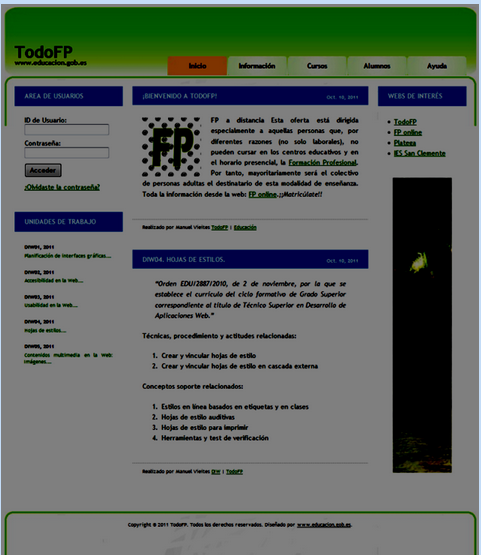
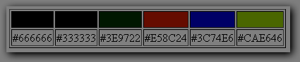

Tarea 4.1
Realiza una web lo mas parecida a:

La tabla de colores empleada es la siguiente:

Instrucciones para la realización del portal:
- Ancho cabecera: 920px, con padding superior, izquierda y derecha de 20px.
- Las opciones del menú están programadas como una lista. Cada opción es un hiperenlace cuyo color de fondo cambia al pasar el ratón por encima
- Columna izquierda: ancho de 220px.
- Columna central : 480px, padding left 20px.
- Columna derecha: 180px, padding left 20px.
- Pie de página: 960px de ancho.
Fijarse en los bordes de las cajas, de la página principal y del pie de página.
Solución
Enlace la página web creada
Tarea 4.2
Fijate en la página web del centro www.ieslapuebla.com y desarrolla una web con el diseño que creas mas conveniente
(rediseña la página del centro) y entrega un documento con los datos explicativos que consideres necesarios.
Solución
Página inicial del centro
Página del centro con los estilos modificados
Para la realización de la tarea se han realizado lo siguientes pasos:
- Se ha descargado la web del instituto, así como la hoja de estilos enlazada al mismo, desde el servidor del instituto.
- Se han fusionado los estilos incluidos en las etiquetas del html de la web a la hoja de estilos enlazada con ella con la intención centralizar los estilos de la web en un solo fichero.
- Se ha creado una nueva hoja de estilo y se ha enlazado al documento html original mediante un script en javascript para permitir cargar la hoja de estilos original o la del diseño nuevo
mediante paso de parámetros en la llamada a la página.
- Se ha diseñado una nueva hoja con la finalidad de ocultar las barras laterales de la web inicial y transformarlas en menús desplegables con la intención de ganar más espacio a la zona
de contenidos. Así mismo se ha cambiado el estilo de colores para hacerlo respetuoso con las normas WCAG respecto a contraste y visibilidad y se han indicado tamaños relativos en la hoja
de estilos con la intención de crear un diseño que se adapte a distintas resoluciones de pantalla, si bien hay que destacar que a ciertos objetos contenidos en la web no se les ha podido
realizar este tratamiento, como es el caso de la marquesina de imágenes, puesto que el tamaño de las mismas viene implementado a traves de objetos que no permiten el uso de unidades de tamaño
relativas, siendo por tanto imposible ajustar su tamaño dinamicamente.